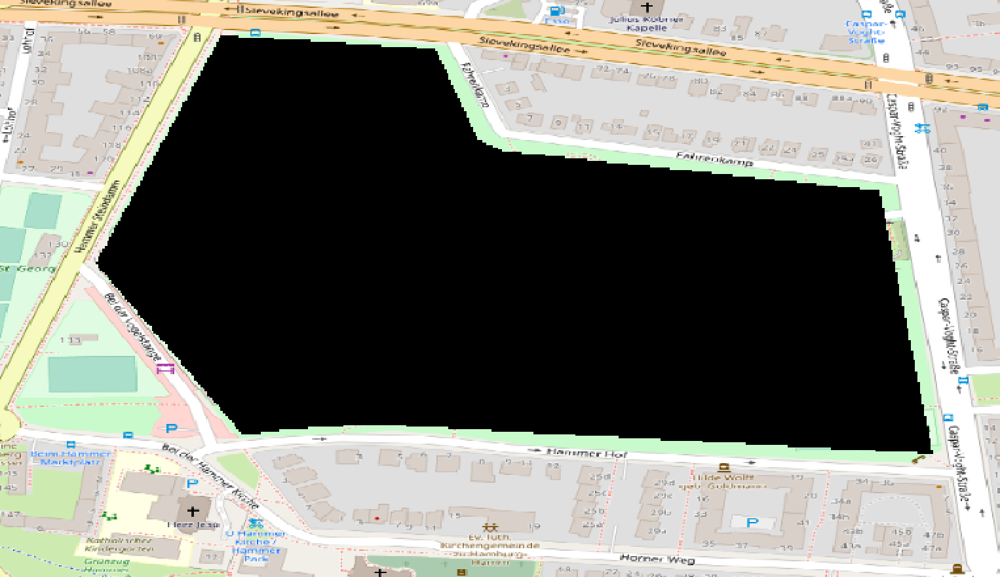
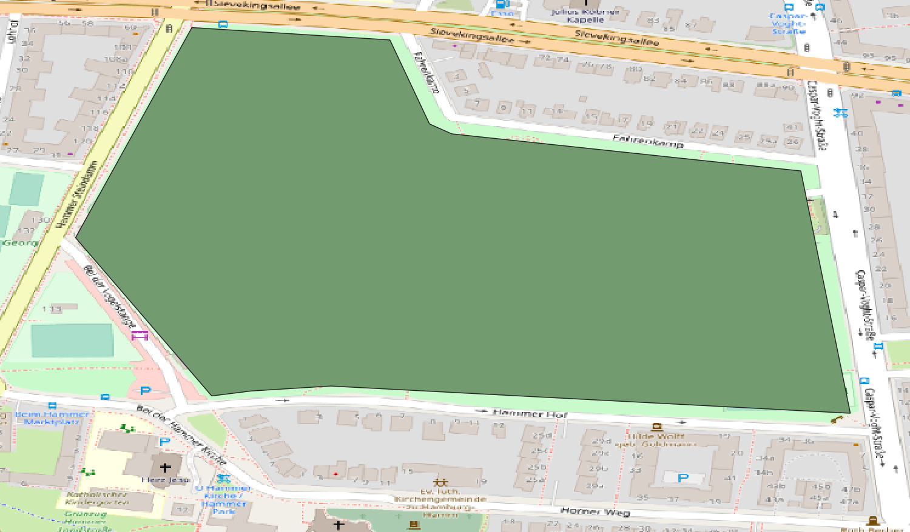

Definition of Layer
Layers represent the environment in which agents live. They serve as surrounding for their dependent agents. In this context, they are responsible to create their agents. Do not confuse layers with the Environment-type that is a data structure that is used for moving and exploring spatial objects (agents and entities). A layer may however use an environment that is used by its agents.
Moreover, layers may hold and provide data, depending on their type. They offer possibilities for input of various data formats (see more information about possible inputs).
Layers are the central model element in a MARS model and are automatically generated by the MARS runtime system and mutual dependencies between different layers are resolved. They require to be registered in the model description.
In MARS, the following layers are distinguished
- Basic Layer
- Layers with dependencies or activity
- Data Layer
The layer ILayer contract is structured as follows:
interface IModelObject {
}
interface ILayer {
InitLayer(layerInitData:TInitData, registerAgentHandle:RegisterAgent, unregisterAgentHandle:UnregisterAgent) : bool
GetCurrentTick() : long
SetCurrentTick(currentStep:long) : void
}
IModelObject <|-- ILayer
interface IDataLayer {
}
ILayer <|-- IDataLayer
Basic Layer
To define a layer the ILayer interface must be implemented or inherited from the existing abstract implementation AbstractLayer.
In the model code, a using import for the namespace Mars.Components.Layers must be added to the own model file.
using Mars.Components.Layers;
Then a new layer type can be defined in the form of a class that inherits from the abstract class AbstractLayer:
public class MyLayer : AbstractLayer
{
public override bool InitLayer(TInitData layerInitData, RegisterAgent registerAgentHandle, UnregisterAgent unregisterAgentHandle)
{
base.InitLayer(layerInitData, registerAgentHandle, unregisterAgentHandle);
// Do your initialization logic here.
return true;
}
}
The InitLayer method can be used to execute custom logic, to initialize Environments or to Spawning agents.
Please note to call the base implementation
base.InitLayer(layerInitData, registerAgentHandle, unregisterAgentHandle);to ensure correct initialization along the class hierarchy.
Layer needs to be registered in the ModelDescription by calling the AddLayer<TLayer>() in your entry point Main() method, to be an active part of the simulation. Active means here that the layer will be managed (initialized and referenced in other active entities) by the MARS framework.
private static void Main(string[] args)
{
var description = new ModelDescription();
description.AddLayer<MyLayer>();
//...
}
Dependent Layer
If layers needs references to other layer for object and direct agent interaction or just to access data layer, the definition of dependent layers is necessary. Dependent layers are acquired by defining the layer instance as a property. MARS resolves this dependency by using PropertyInjection to automatically and assigns the dependent layer to this property.
Cyclic dependencies between Layer can be defined as well, but this is an indication for a bad conceptual design.
public class MyLayer : AbstractLayer
{
[PropertyDescription]
public MyDependentLayer DependentLayer { get; set; }
}
Active Layer
If the layer requires to act within the simulation, it can be made active, which provides the possibility to act before, after and within the tick. The interface ISteppedActiveLayer will get ticked by the LayerContainer, just as the average ITickClient. In Addition it provides to more methods which allow to hook into the moment just before and after a tick.
public class MyLayer : ISteppedActiveLayer
{
public void Tick()
{
//do something this tick
}
public void PreTick()
{
//do something bevore the tick
}
public void PostTick()
{
//do something after the tick
}
}
The base implementation of the ISteppedActiveLayer interface is the AbstractActiveLayer where each step phase (pre, tick, post) can be override and activated for a stepwise behaviour on a layer type.
Data Layer
There are different layer types provides, to integrate data into the model and make it available for agents. To represent spatial components of the model MARS offers raster and vector layers, which can be used to represent the simulation world under consideration (e.g. temperatures, landscapes, buildings, roads, passive objects). All layers can be found in the package Mars.Components.Layers.
In the model code a using import for the namespace Mars.Components.Layers must be added to the own model file, if not already done.
using Mars.Components.Layers;
Raster Layer
Raster layer and grid layer are able to process grid and raster data and can be viewed similar to a 2D matrix. Real numerical values are stored in a n x m matrix and have a certain semantic nominal value.
The IRaster contract provides the following functionalities:
interface IRaster {
CalculateStatistics() : void
}
interface "IRaster`1"<TValue> {
CurrentBand : int <<get>>
NumBands : int <<get>>
Width : int <<get>>
Height : int <<get>>
CellHeight : double <<get>> <<set>>
CellWidth : double <<get>> <<set>>
StartColumn : int <<get>>
StartRow : int <<get>>
EndColumn : int <<get>>
EndRow : int <<get>>
NoDataValue : double <<get>> <<set>>
Maximum : double <<get>>
Mean : double <<get>>
Minimum : double <<get>>
ReadBlock(xOff:int, yOff:int, sizeX:int, sizeY:int) : IRaster<TValue>
WriteBlock(blockValues:IRaster<TValue>, xOff:int, yOff:int, xSize:int, ySize:int) : void
}
"IRaster`1" "<double>" <|-- IRaster
"IRaster`1" --> "LowerLeft" Position
"IRaster`1" --> "UpperRight" Position
interface IRasterLayer {
GetValueByGeoPosition(coordinate:Position) : double
GetValueByGridPosition(coordinate:Position) : double
}
IDataLayer <|-- IRasterLayer
IRaster <|-- IRasterLayer
IDataSet <|-- IRasterLayer
 The raster above shows a sample black area which is associated to concrete pixel value. This value can be used to solve problems such as, querying a coordinate around the park.
To define a grid layer a new layer must inherit from the abstract RasterLayer:
public class MyRasterLayer : RasterLayer
{
}
The raster layer offers various operations for processing matrix data and allows e.g. k-NN Explore queries for nearby cells and coordinates whose nuclei match a condition.
The explore is used to query all raster cells that are within a radius and match a selection criterion.
MyRasterLayer MyRaster { get; set; }
...
var source = Position.CreatePosition(30,40);
var result MyRaster.Explore(source, 10, 5);
The call Explore(source, 10, 5) returns a sequence of the first 5 cells with their values that are within the radius of 10 steps starting from coordinate (30,40).
Please note that the semantic of the
radiusyou specify for theExploredepends on the distance function used within theraster-layer(Haversinewithmeterfor Geospatial,Chebyshevfor Grid).
A fourth argument can be used to optionally define a selection predicate to search for specific cells that meet a condition.
MyRasterLayer MyRaster { get; set; }
...
var source = Position.CreatePosition(30,40);
var result MyRaster.Explore(source, 10, -1, cell => cell > 10);
The call Explore(source, 10, 5, cell => cell > 10) queries for all cells (-1) in the radius ofn 10 whose cell value is greater than 10.
Vector Layer
Vector layers are used to map vector objects that can be represented by points, lines or areas. Vector objects are the most commonly used types for modeling the simulated environment.

The vector layer above shows an example vector layer, building the closed area to represent the park to solve problems such as Checking for position, whether they are inside the park or not.
To define a vector layer, a new layer must inherit from the abstract VectorLayer:
The IVectorLayer contract is providing the following functionalities:
interface IVectorLayer {
SerializeJson() : string
SerializeFeaturesJson() : IEnumerable<string>
}
interface "IVectorLayer`1"<T> {
CurrentTsIndex : int <<get>>
GetClosestPoint(gpsCoordinate:Position, maxDistance:double, predicate:Func<T, bool>) : Position
Distance(featureIndex:int, coords:IEnumerable<Position>) : double
IsPointInside(coordinate:Position) : bool
IsMultiPointInside(coords:IEnumerable<Position>) : bool
IsLineStringInside(coords:IEnumerable<Position>) : bool
IsMultiPointCrossing(coords:IEnumerable<Position>) : bool
IsLineStringCrossing(coords:IEnumerable<Position>) : bool
IsMultiPointIntersecting(coords:IEnumerable<Position>) : bool
IsLineStringIntersecting(coords:IEnumerable<Position>) : bool
IsMultiPointOverlapping(coords:IEnumerable<Position>) : bool
IsLineStringOverlapping(coords:IEnumerable<Position>) : bool
GetAccumulatedPathRating(source:Position, target:Position, distance:int) : double
GetAccumulatedPathRating(source:Position, distance:int, bearing:double) : double
GetTimeseriesDataForCurrentTick() : object
GetFromDataTable(featureId:int, key:string) : object
AddToDataTable(featureId:int, key:string, value:object) : void
}
class "Collection`1"<T> {
}
class "SortedList`2"<T1,T2> {
}
ILayer <|-- IVectorLayer
IVectorLayer --> "GeometryCollection" IGeometryCollection
IVectorLayer --> "Features<IVectorFeature>" "Collection`1"
IVectorLayer <|-- "IVectorLayer`1"
IDataLayer <|-- "IVectorLayer`1"
"IVectorLayer`1" --> "TimeSeriesData<DateTime,double>" "SortedList`2"
"IVectorLayer`1" --> "CoordinateReferenceSystem" ICRSObject
public class MyVectorLayer : VectorLayer
{
}
Features of vector layers (points, lines, surfaces) can be individually abstracted by a model type in MARS. The VectorLayer offers a more abstract implementation VectorLayer<TFeatureType> for the definition of model types which can be initialized by concrete features from a vector input with data.
An example for an abstract feature can look like this:
public class MyVectorFeature : IVectorFeature
{
public double MyFeatureValue { get; set; }
public void Init(IFeature feature)
{
MyFeatureValue = feature.Attributes["valueAttributeName"].Value<double>();
}
}
If the MyVectorLayer is queried, concrete MyVectorFeature objects are returned and can be processed.
myVectorLayer.Explore(new[] {9.99967, 53.55285}, 100, 10, myVectorFeature =>
{
return myVectorFeature.MyFeatureValue > 20;
});